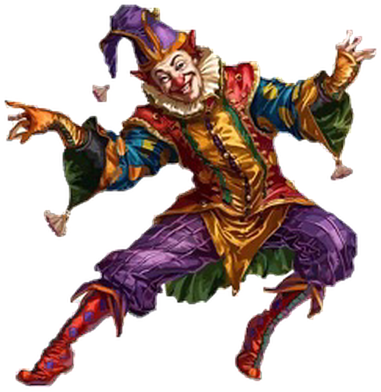

Leadership School Program · MASTER CLASS · Leader Shadi
True to my soul, my voice, my pain, and my rising.
My Leader Shadi
"From your resonant words, in a rhythm both comfortable and easy to connect with: perfection is not for humans."
Assignment 2 was more than just work. It felt like a filter for the soul – stirring, honest, and quietly healing. All my appreciation for your time, your effort, and your heartfelt presence, my distinguished leader. 💙
— the map of the journey —
SOUL GOALS > Material
Trainee Latifah Almutairi · Saturday Sep 5 2026 · 9:15 PMLatifah Almutairi · Assignment 2 for Leader Shadi · Leadership School Program — 1 / 14
Leadership School Program · MASTER CLASS · Leader Shadi
Page 1: Beginning... My Goals
Thank you, Leader Shadi... How truly fortunate I am. I was a small, unseen part of a giant structure, under leadership that is generous and distinguished, like yours. I am proud to be your student, and every workshop I attend gives me a new tool that pushes me toward what was once difficult.
I started here to learn, not to prove. If I had joined ten years ago, my goals were all material. Today, they are different. Today, they are soul goals.
"My spaces must be equal to or bigger than my jumps. Limits don't attract me. I learned that small spaces choke big souls."
✎ key: material goals — happily replaced
✎ key: aim true
🌀 Goal 1: Discovery
Discover what I don't know. Fruitful leaders: Leader Shadi, Leader Alan, Leader Michael – like a tornado. To find what fits me, not what they told me fits.
🧠 Goal 2: Crowded Mind
Routine kills creativity – renew my internal structure. Pull myself from the noise around me, to myself. From against myself, to with myself. Turn distraction into a tool.
🛠️ Goal 3: Increase Toolkit
From traditional to beloved madness. Build tools that love my craziness. Because spaces must be equal to or bigger than my jumps.
✎ key: wonder · aim true · read rise
Trainee Latifah Almutairi · Saturday Sep 5 2026 · 9:15 PMLatifah Almutairi · Assignment 2 for Leader Shadi · Leadership School Program — 2 / 14
Leadership School Program · MASTER CLASS · Leader Shadi
Page 2: My Most Believed Plan... Uprooting
"Uprooting the place with everyone in it – not out of hate – but peace."
I left behind:
Continuous nagging
The classic mentality that wants me to accept excuses and whims
Deadly disappointment of the soul
And I searched for:
My inner peace
Different thinking
My dignity
"I left the chains of job slavery not because I hate people, but because I love my inner peace." "I didn't leave to punish anyone. I left to save myself."

✎ key: break free · inner peace · walk on
Searching for an Open Field
"I search for an open field that guarantees flying, because walls taught me how to suffocate, not how to live."
The idea is still alive with conviction.
Trainee Latifah Almutairi · Saturday Sep 5 2026 · 9:15 PMLatifah Almutairi · Assignment 2 for Leader Shadi · Leadership School Program — 3 / 14
Leadership School Program · MASTER CLASS · Leader Shadi
Page 3: The Atmosphere I Left
"The work atmosphere was full of motivation, activity, and productivity. But it was also full of replicated copies of the one who disappointed me. They were planted there, present, multiplying."
Every day, the atmosphere created images that repeated in my mind. Images that activated wounds. Wounds that hadn't healed yet.
Why Complete Withdrawal?
It's not just a job. It's a place, a culture, a system that reproduces disappointment.
"Uprooting wasn't escape. It was a conviction that staying meant living with activated wounds every day."
✎ key: look closer · repeated copies · still standing
✎ key: the copies — same shape, same smile
✎ first smile of the show — watch it repeat
Trainee Latifah Almutairi · Saturday Sep 5 2026 · 9:15 PMLatifah Almutairi · Assignment 2 for Leader Shadi · Leadership School Program — 4 / 14
Leadership School Program · MASTER CLASS · Leader Shadi
Page 4: Trying to Get Myself Back
I used to sleep among my compositions – writing, sketching, coloring, puzzles. For hours without interruption, with an indescribable feeling.
Then life squeezed everything into minutes and suffocation.
"My spaces must be equal to or bigger than my jumps – but even small spaces now choke me."
"These were identities that were me." "Even the air had the smell of pain. But I'm still here, still trying, still believing the idea is alive."
Scattered Puzzle Pieces
Scattered – but coming back. Hours before ← Minutes now · But the idea is still alive. 💙
✎ key: rest was part of the lab
✎ key: scattered pieces — coming back together
✎ key: read rise
Trainee Latifah Almutairi · Saturday Sep 5 2026 · 9:15 PMLatifah Almutairi · Assignment 2 for Leader Shadi · Leadership School Program — 5 / 14
Leadership School Program · MASTER CLASS · Leader Shadi
Page 5: Action Plan: Creative Spaces
( No time or hour constraints )
🌀 Goal 1: Discovery — search for what fits my personality and adds creative space.
"Tornado full of explosions – not a small breeze." What I will do: study inspiring leaders · try different paths · allow creative explosions · trust what fits me, not what's expected.
🧠 Goal 2: Crowded Mind — find different thinking that renews internal structure.
"Pull me from the surroundings, from against myself to with myself. Turn distraction into a tool." What I will do: practice different perspectives daily · build an internal sanctuary · use noise as raw material, not as an enemy.
"We all fall. We are all human."
🛠️ Goal 3: Increase Toolkit — from traditional to beloved madness.
"Spaces must be equal to or bigger than jumps." What I will do: build tools that support big jumps · keep the flame alive · lift others along the way.
"My lab, my rules. Music is a space where jumps live. Uproot with love, not hate."
One of the tools I have added consciously and with conviction: A psychological tool – to take control of the source, the essence, or the negative cluster that had taken so much from me. Through complete acceptance of the intellectual and psychological levels of humans – the near, the far, or the very, very far from perfection. We do not reach it, no matter how hard we try. And after that acceptance, I took the decision to begin. And here I am writing it now, with the same pen that once drew the ugliest picture of disappointment.
✎ key: wonder
Trainee Latifah Almutairi · Saturday Sep 5 2026 · 9:15 PMLatifah Almutairi · Assignment 2 for Leader Shadi · Leadership School Program — 6 / 14
Leadership School Program · MASTER CLASS · Leader Shadi
Page 6: Connecting Assignment 1 & Assignment 2
When I wrote my goals in Assignment 1, I was drawing a map for myself. Now, in Assignment 2, I see how that map turned into a path I walk.
Goal 1: Discovery
In Assignment 1, I wanted to discover what I don't know, and to search for leaders like a tornado, to find what fits me not what they told me fits. In Assignment 2, this goal turned into a clear plan: searching for creative spaces that suit my personality, allowing myself to explode like a tornado, not like a small breeze. The three leaders became a model I draw inspiration from, not faces I follow.
Goal 2: Crowded Mind
In Assignment 1, I wanted to renew my internal structure, and pull myself from the noise to myself. In Assignment 2, this turned into a real tool: a crowded but organized mind, different thinking that experiments and looks from new angles, and distraction that became raw material I transform into production, not an enemy I run from. I became with myself, not against myself.
Goal 3: Toolkit
In Assignment 1, I wanted to move from traditional to beloved madness, and build tools that love my craziness. In Assignment 2, this turned into a real lab: new tools I write with, sketch, color, and play, restoring the identities I lost, and giving me the strength for big jumps. Beloved madness became part of my routine, not a passing whim.
And the Story... Was the Bridge
Between the goal and its plan, the story stood. Old disappointment awakened by new disappointment, air with the smell of pain, and a repeated bottom. But it didn't distract me. It reminded me why these goals and this plan exist. In every goal, there was disappointment trying to stop me. In every plan, there was uprooting trying to free me.
"Assignment 1 was about what I want. Assignment 2 was about how I will achieve it. And the story was about why."
✎ key: every piece connects
✎ key: the bridge — goals → plan → why
Trainee Latifah Almutairi · Saturday Sep 5 2026 · 9:15 PMLatifah Almutairi · Assignment 2 for Leader Shadi · Leadership School Program — 7 / 14
Leadership School Program · MASTER CLASS · Leader Shadi
Page 7: No One Perfect Except God
Perfection Belongs to God Only
I used to think disappointment was a personal failure, something shameful to hide. I used to call it something else before, but I was wrong. It was disappointment. Contagious. Heavy.
"We all fall. We are all human. From one tired soul to another in places full of repeated copies."
Human
"We are human, saturated with a very sensitive network of emotions, capable of being torn, severed, or damaged." "That straw broke something inside me. But it didn't end me."
Why Perfection is Boring
"If we were perfect, we wouldn't need spaces bigger than our jumps. We wouldn't need to uproot. We wouldn't need to create in our lab a space for our drawings and games. We wouldn't need to play piano until hair flies."
Reminder
"We all fall. We are all human. Even the air had the smell of pain once. But pain is not our home. The open field is our home."
✎ key: gentle eyes see further
✎ key: read rise
Trainee Latifah Almutairi · Saturday Sep 5 2026 · 9:15 PMLatifah Almutairi · Assignment 2 for Leader Shadi · Leadership School Program — 8 / 14
Leadership School Program · MASTER CLASS · Leader Shadi
Page 8: Conclusion... The Smell of Disappointment Returns, with the Same Taste, and Rigidity is the Reason
Not all disappointment is forgotten. Some of it lives in the details, reshaping the scene, making the air itself carry the smell of pain.
That old disappointment... taught me that appearances don't reflect essence, that elegant covers may hide an immeasurable weight. Taught me that the straw, with its triviality and cheap weight, can be enough to break what remains of a soul. And taught me that existence at the bottom was not my choice, but a decision made by others.
Then came another disappointment... It was not different. It was the same smell, the same taste, the same rigidity that made the pain repeat. It came at a time when I thought wounds had healed, and in a place I thought was a space for learning and building. But it rearranged the scene, and summoned images I thought I had moved past. That new disappointment... had the same taste, the same hole it makes in the chest, and the same feeling that there were those who agreed, conspired, and executed, while I discovered it too late. And the bottom was there too... Not like the first bottom, but similar. A new bottom, with new faces, but carrying the same smell, the same taste, the same rigidity.
"Even the air had the smell of pain."
But the difference this time... I am no longer the one who breaks. I am no longer the one who accepts excuses and whims, and coexists with deadly disappointment. I came to know: spaces must be equal to or bigger than jumps. And I came to know that uprooting is not hate, but peace. Not escape, but conviction.
That giving soul... that gave repeatedly, and expected loyalty, and found disappointment. That tried repeatedly, and expected fairness, and found disappointment. That found itself at the bottom twice, and each time rigidity was the reason. It no longer waits. It no longer accepts.
Uprooting the place with everyone in it... not because I hate, but because I love my inner peace more than anything. I left what doesn't resemble me, what doesn't resemble my soul, and what doesn't resemble my giving.
"I uprooted with love, not hate."
And here I am leaving... not with noise, but with a silence that chokes more than words. Not with confrontation, but with an absence that leaves a void that cannot be filled. Because the greatest message a tired soul can leave, a soul tired of giving, is to walk away quietly, leaving behind one question: Was it worth it? A question that needs no answer. Because regret will come, late, heavy, like that straw that broke the soul one day. It will come when they realize they lost a soul that was a treasure. And then, the impact will be complete.
✎ key: rigidity — the same taste, again
✎ key: a rehearsed smile — the show
Page 9: The Story That Drove Everything
"If you have time, this is the story that awakened the goals, gave meaning to the words, and gave the decision its power."
🎫 the gate — enter if you dare
Trainee Latifah Almutairi · Saturday Sep 5 2026 · 9:15 PMLatifah Almutairi · Assignment 2 for Leader Shadi · Leadership School Program — 9 / 14
Leadership School Program · MASTER CLASS · Leader Shadi
Page 9: The Story That Drove Everything
"If you have time, this is the story that awakened the goals, gave meaning to the words, and gave the decision its power."
Not all human goals, even if they are many, are one. Nor do all the elegant titles of refined covers reflect what is inside them. Nor the heaviness of steps and their slowness, and accepting what is said directly without thinking, and going against their principles and nature – because they saw in the speaker something of successful intelligence and they wanted it.
In that exaggerated focus, and those confused features, and that submissive surrendered obedience, there is a weight with no measure.
A word she heard took her to a time torn by pain. Perhaps a look she saw from one who underestimated or belittled her, or perhaps an idea that confirmed that resemblance, took her to reflect on how one could dare to crush her while fully knowing who she truly is.
✎ the welcome — wide arms, loud colors
✎ the painted smile — look closer
Trainee Latifah Almutairi · Saturday Sep 5 2026 · 9:15 PMLatifah Almutairi · Assignment 2 for Leader Shadi · Leadership School Program — 10 / 14
Leadership School Program · MASTER CLASS · Leader Shadi
The Story... (cont.)
My noble reader, what killed her internal programming was heavier upon her than material calculations or logical goals. And what the one who threw an idea shows, imagining he hit the depth of the unconscious mind, arrogant in what he memorized, condescending in his conclusions – is nothing but an unconscious response from a tangled, exhausted mind that wants a straw, wants an idea, wants an escape from itself.
And it was done.
When you spoke about perfection, every sigh and every smile from you carved its way to me truthfully, and I am certain it was for everyone as well. And the pleasure in that, as you mentioned, my generous leader, has other doors that are felt and would take long to explain.
Among the most refined and highest pleasures in attempts to arrive and in unconscious striving – that pleasure which shows you the reactions that the mind recorded and categorized in the same moment they were frozen.
And at the bottom, where everyone wished for her, there she was, in her apparent comfort that covered dunes of cold, provoking helplessness, with strange contradictions. And she was searching for that hope hanging on that straw, found in bottoms scheduled in a pattern of invisible challenge, intertwined with human animal instincts, quenching the animality of instincts for every participant in the play of stripping. Some had already reached their goal and ended with a comfortable, balanced smile the scene of puppets in their final, live show, with goals carefully studied and executed precisely in every direction.
✎ the play — keep them laughing
Trainee Latifah Almutairi · Saturday Sep 5 2026 · 9:15 PMLatifah Almutairi · Assignment 2 for Leader Shadi · Leadership School Program — 11 / 14
Leadership School Program · MASTER CLASS · Leader Shadi
The Story... (cont.)
At the bottom, at the level of studied belittlement meant to break her and humiliate her, she appeared in that image that reflected contradiction in its most vivid form – for what the eyes see is not what the soul holds.
At that time, she was swimming in her imagination, seeing in that straw what might revive her soul in its first version, full of meanings that cannot be written – from the passion of birds, the playfulness of cats, the trotting of that loyal one. She even saw it as a butterfly carrying life with its spirit.
At that moment, the moment of the straw had arrived with specific timing, voice messages targeting her at the bottom, live events, and known clauses, understood and agreed upon and enjoyed by an audience full of a platform directed with a title worthy of her and her presence, and with a bestial, instinctive ecstasy to grind the remaining crumbs of her at the bottom, where her location had been decided.
That straw, with its cheapness and triviality, was guaranteed to break the core of that soul, which had only needed what it heard to imprison itself at the bottom, with an inexplicable rigidity.
Signals conflicted, and the voice that was screaming inside her, warning her of approaching harm equal to that tearing, that disappointment. The rigidity increased, and with it came the arrogance of rejecting all signals, so awareness had to place a mark on its resentment, to expand with it understanding, the depth of pain, and its memories.
When she saw those looks, belittling and humiliating, translated by her animal instinct into incomprehensible deceit, she did not see them, nor did she want to comprehend them. She was witnessing a scene of disappointment with the same taste, the same smell, and the same poisoned dagger.
It led her at that time, and continued with her with a coldness more damaged than it is now, to the sanctuary of inner peace. Coldness was the master of the situation, which the sanctuary of inner peace had taken care of, and she marveled at its ability to control.
The scene of belittlement, wasting dignity, and feelings hung by their own will ended, unfortunately. But the shock of the mined blow had begun to respond to a massive flow of sensory and visual images.
I did not truly realize that there is a continuous pain in presence and absence, in wakefulness and sleep. A pain that changes colors, shapes, the taste of every delicious thing, and the smell of everything that used to please... until even the air had the smell of pain.
the audience — enjoying the show
Trainee Latifah Almutairi · Saturday Sep 5 2026 · 9:15 PMLatifah Almutairi · Assignment 2 for Leader Shadi · Leadership School Program — 12 / 14
Leadership School Program · MASTER CLASS · Leader Shadi
The Story... (cont.)
So the idea of perfection had a pictorial presence in my imagination, and when you uttered that there is no perfection except His Face, Glory be to Him, I found that we are all humans. Those who were in the orchestrated show – all humans. I too am a human. By what scale are they weighed, and who led them in that, and how was the flow of the image, and how was the judgment announced against me and issued and agreed upon and executed – it is nothing but human minds that I cannot and dare not classify because they are simply human, and because there is no perfection except for God alone.
I found that in the years of developing yourself, my generous leader, you were striving to harness what distracts your productivity by controlling it and making it a tool that helps you in development and success, and in that is a strength and will that an ordinary person cannot muster.
Some may see arrogance in my description, may sense a reply in it, but believe me this is truly me... Yes, the human who cannot reach perfection, the one full of a neural network governed by precise centers in the brain that may be damaged in a second by a shock from a human of the size and weight of a straw – I lifted him and valued him, so he betrayed and belittled and underestimated. But with all honesty, after all experiences and levels of pain, I feel pity for those for whom it is easy to defame or hurt a person who may regret hurting someone who does not deserve to be hurt. How does he continue in life as if nothing happened? How does he sleep peacefully and enjoy the company of his loved ones truthfully while there is someone who was exhausted because of him?
I could not get over these feelings after hearing that tone in the layers of your voice and delivering the elegant philosophy of perfection and the pleasure in it – and what you mean may be completely different, yet it widened my horizons and took me to a sharp angle where I sensed its details and found in it part of that pleasure in the heart of painful feelings, for transcendence and elevation and rising of thought – an understanding that is not instincts but depth of intellectual space and belief in destiny and rising above translating intentions and translating what is behind reactions or spontaneous positivity.
My leader whom I am proud to be a student in your ranks, your honest words crystallized the idea and completed the cycle of its comprehension and its practice consciously, without injustice to yourself nor cancellation of it, and choosing what suits its peace and its status and acknowledging that you may one day prove that you are only human just as they proved in their arena and their place and under their control and their judgment and their perception.
And with complete conviction, I have added this psychological tool to control the source, the essence, or the negative cluster that had taken so much from me. Through complete acceptance of the intellectual and psychological levels of humans – the near, the far, or the very, very far from perfection. We do not reach it, no matter how hard we try. And after that acceptance, I took the decision to begin. And here I am writing it now, with the same pen that once drew the ugliest picture of disappointment.
the smile fades — the mask stays
the show goes on... without her
✎ behind the paint — nothing human left
Trainee Latifah Almutairi · Saturday Sep 5 2026 · 9:15 PMLatifah Almutairi · Assignment 2 for Leader Shadi · Leadership School Program — 13 / 14
Leadership School Program · MASTER CLASS · Leader Shadi
Keep the Journey Going
ROLL WITH FREEDOM
Lightweight. Fast. Unstoppable.
"My spaces must be equal to or bigger than my jumps."
Limits don't attract me. Small spaces choke big souls. The open field is home. Uproot with love, not hate. 💙
~ Latifa Trainee – Leader Shadi
✎ key: the mask stays with the show — she walks free
Trainee Latifah Almutairi · Saturday Sep 5 2026 · 9:15 PMLatifah Almutairi · Assignment 2 for Leader Shadi · Leadership School Program — 14 / 14
 Leadership School Program · MASTER CLASS · Leader Shadi
Leadership School Program · MASTER CLASS · Leader Shadi